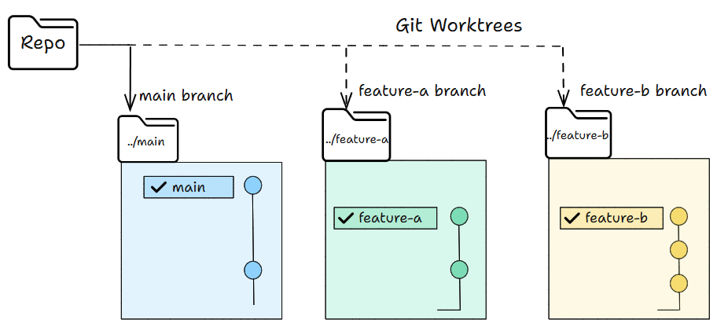
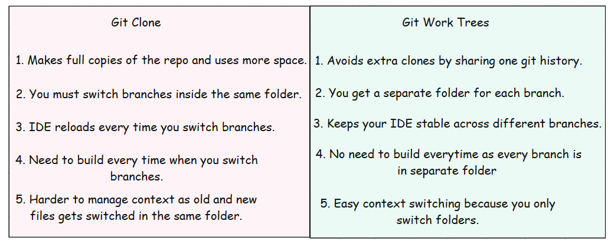
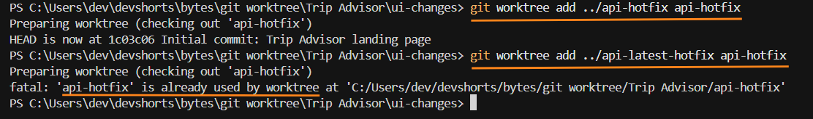
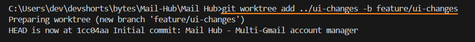
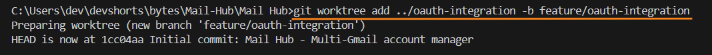
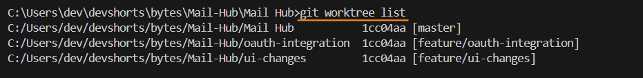
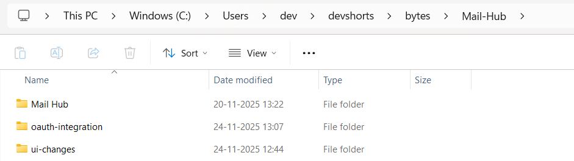
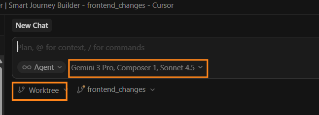
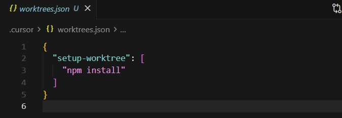
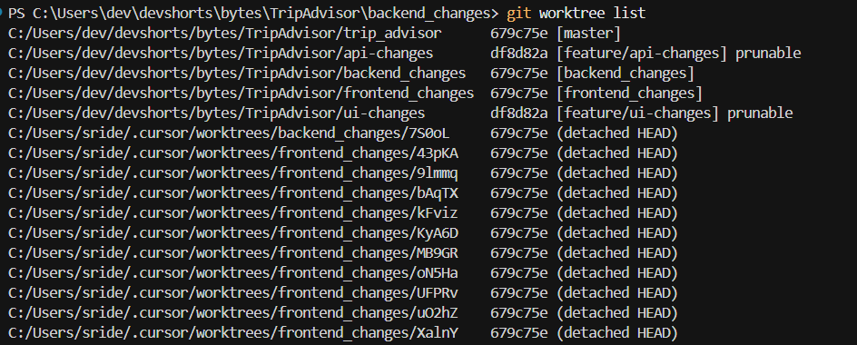

使用 Git Worktree 進行平行代理編程
大多數人每天都會使用 AI 代理。很多時候，我們甚至沒有注意到它。代理現在在程式設計中已經很常見，它們幫助我們完成許多任務。
我們現在正在邁向下一個基於代理編程的階段。我們可以使用平行代理，在同一個儲存庫中同時處理多個功能和修復。
Claude Code 和 Cursor 支援平行代理。它們使用 Git worktree 為每個代理提供自己的工作空間。您可以通過在專案中建立 worktree 來遵循相同的方法。
讓我們先了解什麼是 Git worktree，以及它們如何幫助平行編程。
大綱
- 什麼是 Git worktree
- Git worktree 與 Git Clone 的比較
- Git worktree 指令
- Claude Code 的 Git worktree 平行代理
- Cursor 的 Git worktree 平行代理
- CodeRabbit 的 Git worktree runner
什麼是 Git worktree
Git worktree 是 Git 中的一項功能。在我們了解 Git worktree 之前，讓我們先看看一般的 Git 流程。
- 您有一個工作目錄。
- 您有一個作用中的分支。
- 切換分支會改變該目錄中的所有檔案
my-app/
├── src/
├── README.md
└── .git/
當您執行 git checkout "feature-abc" 時，整個目錄會切換到該分支。
- Worktree 讓您可以從同一個儲存庫擁有多个工作目錄。
- 每個目錄可以有自己的分支。
- 您可以同時在所有這些目錄中工作，而無需切換任何東西。
簡單來說，您可以在不切換分支的情況下平行工作。
my-app/
├── src/
├── README.md
└── .git/
my-app-feature-a/ ← Worktree 1 (feature-a 分支)
├── src/
├── README.md
└── .git ← 檔案指向主儲存庫
my-app-feature-b/ ← Worktree 2 (feature-b 分支)
├── src/
├── README.md
└── .git ← 檔案指向主儲存庫

上圖解釋了這個概念。但指令會讓它更加清晰。
這是我們在一般克隆和使用 work tree 時所做的比較。

Git worktree 指令
以下是您會經常使用的一些基本 Git worktree 指令。
# 建立 worktree 和新分支
git worktree add <worktree路徑> -b <新分支名稱>
# 範例
git worktree add ../add-header -b feature/add-header
# 從現有分支建立 worktree
git worktree add <worktree路徑> <分支名稱>
# 範例
git worktree add ../ui-changes feature/ui-changes
# 列出所有作用中的 worktree
git worktree list
# 移除 worktree
git worktree remove <worktree路徑>
# 範例
git worktree remove ../add-header
Git 對 worktree 有一個簡單的規則：一個分支只能同時存在於一個 worktree 中。
如果分支已經在某個 worktree 中使用，Git 會阻止您再次使用它。請參見下圖。

Claude Code 的平行代理
當您使用 Git worktree 時，Claude Code 可以執行平行代理。每個 worktree 都有自己獨立的目錄和分支，因此 Claude 可以同時處理多個任務。
當時我正在建立一個個人使用的 Gmail 郵件中心。同時有 UI 變更和 OAuth 工作在進行。
以下是我如何使用 Claude Code 搭配 worktree 同時建立兩個功能。
git worktree add ../ui-changes -b feature/ui-changes

git worktree add ../oauth-integration -b feature/oauth-integration

建立它们之後，我列出 worktree 以確保一切都設定正確：

您也可以查看每個分支的獨立目錄。

現在 Claude Code 可以在這些分支上工作，而無需切換，因為我們有獨立的目錄。
我使用 Claude Code 透過 worktree 同時處理 UI 變更和 OAuth 整合。
下面的影片展示了它如何即時運作。
Cursor 的平行代理
Cursor 讓您可以輕鬆地透過在背景使用 Git worktree 來執行平行代理。
您可以先選擇一個 worktree 並為同一任務選擇多個模型，如下圖所示。Cursor 將同時在所有選定的模型上執行相同的提示。

提交提示後，Cursor 會為每個模型顯示一張卡片。您可以點擊這些卡片，查看每個模型如何變更程式碼。
當您喜歡某個版本時，可以點擊 Apply。Cursor 會將那些編輯帶入您已checkout 的分支。
您也可以透過編輯 .cursor/worktrees.json 檔案來自訂 worktree。
您在 setup-worktree 下新增的所有指令將在設定期間在 worktree 內執行。

您隨時可以透過執行 git worktree list 來查看所有作用中的 worktree。如果想在 SCM 面板中查看 Cursor 建立的 worktree，可以啟用 git.showCursorWorktrees 設定。

CodeRabbit 的 Git Worktree Runner
如果您想要更簡單的方式來處理 worktree，CodeRabbit 提供了一個名為 Git Worktree Runner 的輔助工具。它讓建立、開啟和管理 worktree 變得容易，透過簡短的指令。如果您經常使用 worktree，這個工具可以節省大量打字時間。
您可以在這裡找到它：CodeRabbit 的 Git Worktree Runner
以下是安裝和使用方法。
# 安裝
git clone https://github.com/coderabbitai/git-worktree-runner.git
cd git-worktree-runner
sudo ln -s "$(pwd)/bin/git-gtr" /usr/local/bin/git-gtr
# 使用方式
cd ~/your-repo # 導航到 git 儲存庫
git gtr config set gtr.editor.default cursor # 一次性設定
git gtr config set gtr.ai.default claude # 一次性設定
# 日常工作流程
git gtr new my-feature # 建立 worktree
git gtr editor my-feature # 在編輯器中開啟
git gtr ai my-feature # 啟動 AI 工具
git gtr rm my-feature # 完成後移除
這張表格快速比較了 Git worktree 指令和相應的 gtr 指令。
實際操作範例
傳統工作流程的痛點
# 情境：同時開發兩個功能
# 傳統做法：來回切換分支
cd myapp
git checkout feature/auth # 切到 auth 分支
# ... 做 auth 工作 ...
git checkout feature/ui # 切回 ui 分支
# ... 做 ui 工作 ...
git checkout feature/auth # 又要切回 auth
# → 每次切換都會改動目錄中的所有檔案
# → 可能遇到 stash/unstash 的麻煩
# → 編輯器也需要重新載入專案
Worktree 的做法
# 一次建立，永久隔離
# 主專案 (假設在 myapp/)
cd myapp
# 建立第一個 worktree 做 auth
git worktree add ../myapp-auth -b feature/auth
# 建立第二個 worktree 做 ui
git worktree add ../myapp-ui -b feature/ui
# 查看所有 worktree
git worktree list
# 輸出:
# /path/to/myapp (HEAD -> main)
# /path/to/myapp-auth (feature/auth)
# /path/to/myapp-ui (feature/ui)
平行終端機操作示意
# 終端機 1: 在 auth worktree 工作
cd ../myapp-auth
git status # 只看到 auth 相關的變更
npm test # 跑 auth 測試
# 終端機 2: 在 ui worktree 工作 (完全獨立)
cd ../myapp-ui
git status # 只看到 ui 相關的變更
npm test # 跑 ui 測試
# 兩個終端機同時運行，互不干擾！
整合 AI 代理實戰
# 讓 Claude Code 在獨立的 worktree 中工作
# 終端 1: Claude 處理 auth
cd ../myapp-auth
claude "實作 OAuth2 登入功能"
# 終端 2: Claude 處理 ui
cd ../myapp-ui
claude "更新登入頁面的 UI"
完成後的合併流程
# 假設兩個功能都完成了
# 回到主專案
cd myapp
# 合併 auth
git merge feature/auth
# 合併 ui
git merge feature/ui
# 清理不需要的 worktree
git worktree remove ../myapp-auth
git worktree remove ../myapp-ui
# 刪除已合併的分支
git branch -d feature/auth
git branch -d feature/ui
Worktree 的核心優點
| 維度 | 無 Worktree | 有 Worktree |
|---|---|---|
| 分支切換 | git checkout 替換整個目錄 | 各 worktree 獨立 |
| 同時工作 | 只能一個分支 | 多個分支同時 |
| 狀態污染 | 切換時需 stash/reset | 完全隔離 |
| AI 代理整合 | 共享空間會衝突 | 每個代理獨立目錄 |
| 測試隔離 | 混在一起 | 各自乾淨環境 |
什麼情況下特別有感？
情境 1: 同時修 Bug + 做功能
# 正在開發新功能，突然發現 production bug
# 傳統做法：stash 目前工作 → 切分支修 bug → merge → unstash
# Worktree 做法：
# 直接開一個 worktree 修 bug
git worktree add ../hotfix -b hotfix/critical-login-bug
# 在 hotfix worktree 快速修復
cd ../hotfix
# ... fix the bug ...
# 主目錄完全不受影響，繼續開發新功能
cd ../myapp
git status # 乾淨的 working directory
情境 2: Code Review 時對照
# 需要 review 同事的 PR，同時做自己的工作
git worktree add ../review-pr-123 -b review/pr-123
# review-pr-123 可以看程式碼
cd ../review-pr-123
git log --oneline -10
# 自己分支完全不動
情境 3: 大型重構測試
# 重構核心模組，怕搞砸
git worktree add ../refactor-core -b refactor/core-module
# 在 refactor 分支大刀闊斧
# 主分支隨時可以切過去看舊版對比
情境 4: 平行代理編程 (本文重點)
# Claude Code + Cursor + Gemini 同時在同個 repo 工作
# 每個 AI 獨立目錄，不會覆蓋彼此的檔案
git worktree add ../agent-1 -b feature/part-a
git worktree add ../agent-2 -b feature/part-b
git worktree add ../agent-3 -b feature/part-c
# 每個終端機啟動一個 AI
# agent-1: "實作登入 API"
# agent-2: "實作使用者資料模組"
# agent-3: "實作通知服務"
與 CodeRabbit Git Worktree Runner 整合
# 使用 gtr 簡化日常工作
# 設定一次
git gtr config set gtr.editor.default cursor
git gtr config set gtr.ai.default claude
# 快速建立 worktree
git gtr new auth-feature
# 等同於: git worktree add ../auth-feature -b feature/auth
# 在編輯器開啟
git gtr editor auth-feature
# 啟動 AI 幫你寫 code
git gtr ai auth-feature
# 完成後移除
git gtr rm auth-feature
# 等同於: git worktree remove ../auth-feature && git branch -d feature/auth
常見問題與解決方案
Q: 分支已經被使用？
# Git 拒絕你，因為該分支已在某 worktree 中
git worktree add ../test -b feature/same-branch
# 輸出: fatal: 'feature/same-branch' is already being used by worktree at '/path/to/other'
# 解決方案：建立新分支
git worktree add ../test -b feature/same-branch-copy
Q: 需要同步多個 worktree 的依賴？
# 每個 worktree 需要各自安裝依賴
cd ../myapp-auth && npm install
cd ../myapp-ui && npm install
# 或者寫腳本一次搞定
for wt in ../myapp-*; do
(cd "$wt" && npm install)
done
Q: 主分支落後了？
# 在主 worktree 更新
cd myapp
git fetch origin
git merge origin/main
# 其他 worktree 不受影響
# 各分支 maintainer 自行決定何時 merge main
結語
我們探討了 Git worktree 以及它們如何幫助平行代理編程。
Worktree 讓您可以同時建立多個功能，而無需切換分支或建立額外的克隆。
像 Claude Code、Cursor 這樣的工具讓它變得更好，它們將每個代理連結到自己的 worktree。這樣可以保持工作整潔、安全、快速。
一旦您開始使用 worktree，就很回到舊的單一目錄流程了。您將獲得更多專注、更快的速度，以及更少的錯誤。嘗試為您的下一個專案建立一些 worktree，看看同時處理多個功能是多麼簡單。
如果您使用任何基於代理的編碼工具，worktree 將成為您日常工作中很自然的一部分。
現在就試試看，讓我知道它如何幫助您的工作流程！
祝您學習愉快！
感謝您閱讀 Dev Shorts！這篇文章是公開的，所以請自由分享。